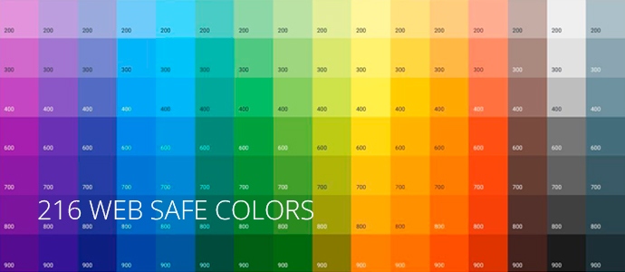

На разных устройствах, с разными системными настройками, правильная передача цвета является проблемой. Браузер всегда старается подстроить цветовую палитру под системные настройки и воможности монитора. Если браузер не в состоянии правильно отобразить тот или иной цвет, то он пытается подобрать похожий или смешивает несколько соседних цветов. Может так получиться, что исходный цвет будет замещён чем-то совершенно неподходящим.
Выход из этой ситуации был найден в применении палитры, каждый цвет которой гарантированно передается одинаково всеми браузерами на разных платформах. Это так называемая "безопасная палитра". В эту палитру входят цвета, цветовые составляющие которых, принимают следующие значения:00,33,66,99, CC,FF, во всех возможных 216 их сочетаниях.
